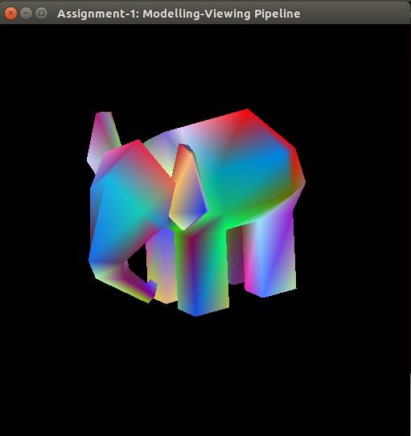
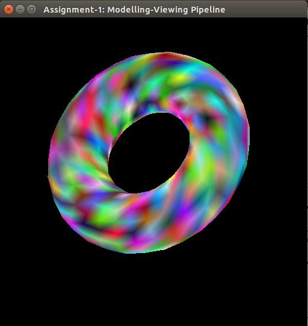
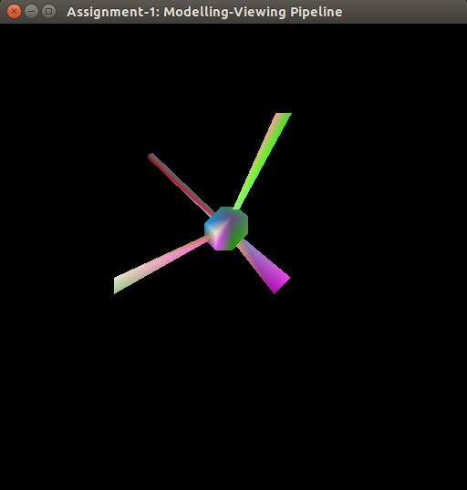
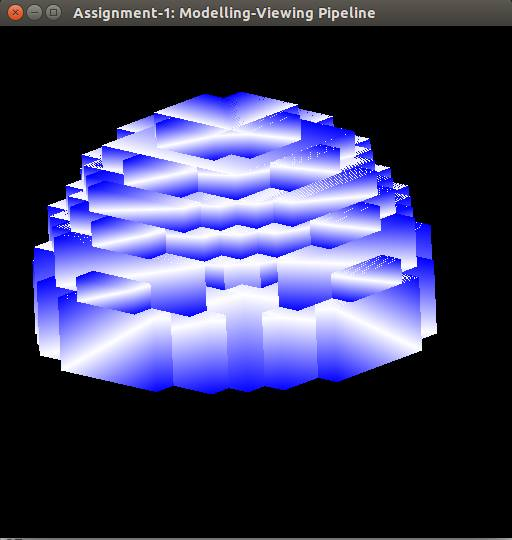
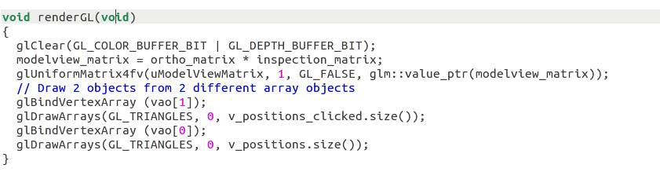
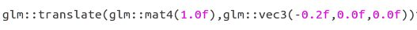
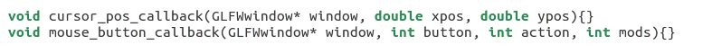

As part of this assignment we tried to create an elephant , a torus or a donut , an igloo and a fan. All the models are created using triangles. The vertices are curated by hand and some using scripts. The raw files for the objects have been named as elephant.raw, torus.raw, igloo.raw, fan.raw. The following are the screenshots of the models created using openGL4.
   The program is by default set in modelling mode. You can start creating your model by clicking "left mouse button" on the screen to add vertices. You see nothing till you add the 3rd vertex. You can remove the last added point by pressing "shift + left mouse button". You can save the file by pressing "K key" and entering the name in the teminal. You can also load a raw file by pressing "L key" and entering the file name in the terminal. When you load a object the mode is set to modelling by default.
You can change the mode from modelling to inspection by pressing "I key". In inspection mode you can rotate the model about its centroid, you can tranlate the object along +ve and -ve x,y,z axes. The controls are mentioned below. By pressing "R key" the origin is moved to the centriod of the object.
All the key and mouse events are handled in gl_framework.cpp and corresponding function in ass1_modelling.cpp is called. For save its save_buffer, for load its reload_buffer.
The following code is used to use two different vbos and vaos for two models
To translate a model the following function is used
To detect mouse click and get the coordinates the following functions are used
The following are the assumptions made as part of this assignment